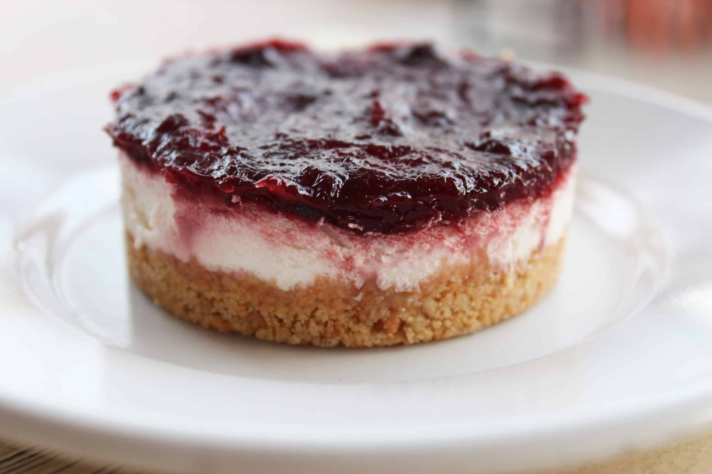
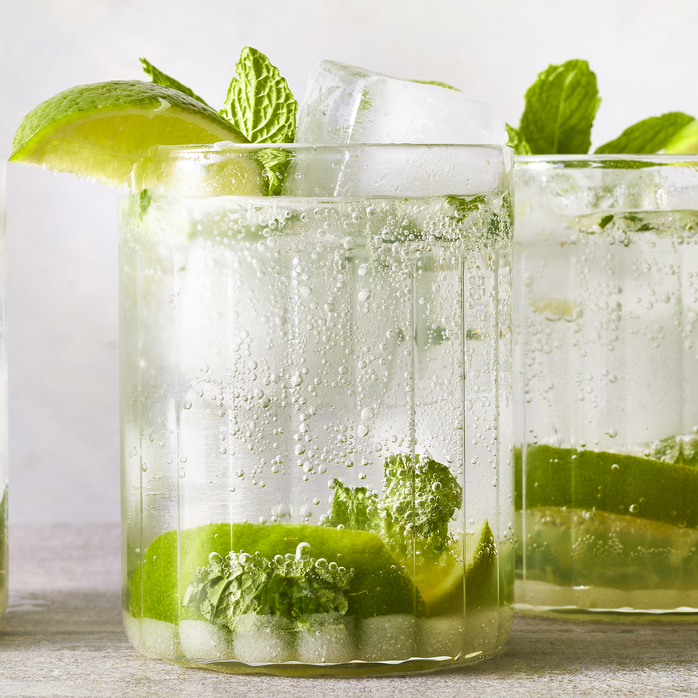

"Odin Recipies"
 Lasagna
Lasagna
Everyone loves a good lasagna, right?
It's a great way to feed a crowd and a perfect dish to bring to a potluck. It freezes well. It reheats well. Leftovers will keep you happy for days.
For this recipe, we are essentially making a thick, meaty tomato sauce and layering that with noodles and cheese into a casserole. Here's the run-down:
- 1 (16 ounce) package lasagna noodles
- 1 pound fresh mushrooms, sliced
- ¾ cup chopped green bell pepper
- ¾ cup chopped onion
- 3 cloves garlic, minced
- 2 tablespoons vegetable oil
- 2 (26 ounce) jars pasta sauce
- 1 teaspoon dried basil
- 1 (15 ounce) container part-skim ricotta cheese
- 4 cups shredded mozzarella cheese
- 2 huevos
- ½ cup grated Parmesan cheese
Step 1.Cook the lasagna noodles in a large pot of boiling water for 10 minutes, or until al dente. Rinse with cold water, and drain.
Step 2.In a large saucepan, cook and stir mushrooms, green peppers, onion, and garlic in oil. Stir in pasta sauce and basil; bring to a boil. Reduce heat, and simmer 15 minutes.
Step 3.Mix together ricotta, 2 cups mozzarella cheese, and eggs.
Step 4.Preheat oven to 350 degrees F (175 degrees C). Spread 1 cup tomato sauce into the bottom of a greased 9x13 inch baking dish. Layer 1/2 each, lasagna noodles, ricotta mix, sauce, and Parmesan cheese. Repeat layering, and top with remaining 2 cups mozzarella cheese.
Step 5.Bake, uncovered, for 40 minutes. Let stand 15 minutes before serving.

Cheesecake
With a creamy filling and buttery biscuit base, who can resist this classic dinner party dessert? Choose from traditional, fruity or boozy cheesecakes with our round-up.
- 1 (9 inch) prepared graham cracker crust
- 1 (8 ounce) package cream cheese, softened
- 1 (14 ounce) can sweetened condensed milk
- 1 (21 ounce) can cherry pie filling, chilled
- 1 teaspoon vanilla extract
Step 1.In a medium bowl, beat cream cheese until fluffy. Add condensed milk and mix thoroughly. Stir in lemon juice and vanilla.
Step 2.Pour into crust. Chill 2 hours. Top with cherry or other pie filling before serving. Refrigerate.

Mojito
This is an authentic recipe for mojito. I sized the recipe for one serving, but you can adjust it accordingly and make a pitcher full. It's a very refreshing drink for hot summer days. Be careful when drinking it, however. If you make a pitcher you might be tempted to drink the whole thing yourself, and you just might find yourself talking Spanish in no time!
- 10 fresh mint leaves
- ½ medium lime, cut into 3 wedges, divided
- 2 tablespoons white sugar, or to taste
- 1 cup ice cubes, or as needed
- 1 ½ fluid ounces white rum
- ½ cup club soda, or as needed
Step 1.Place mint leaves and 1 lime wedge into a sturdy glass. Use a muddler and crush to release mint oils and lime juice.
Step 2.Add remaining lime wedges and 2 tablespoons sugar, and muddle again to release the lime juice. Do not strain the mixture.
Step 3.Fill the glass almost to the top with ice. Pour in rum and fill the glass with club soda.
Step 4.Stir, taste, and add more sugar if desired.